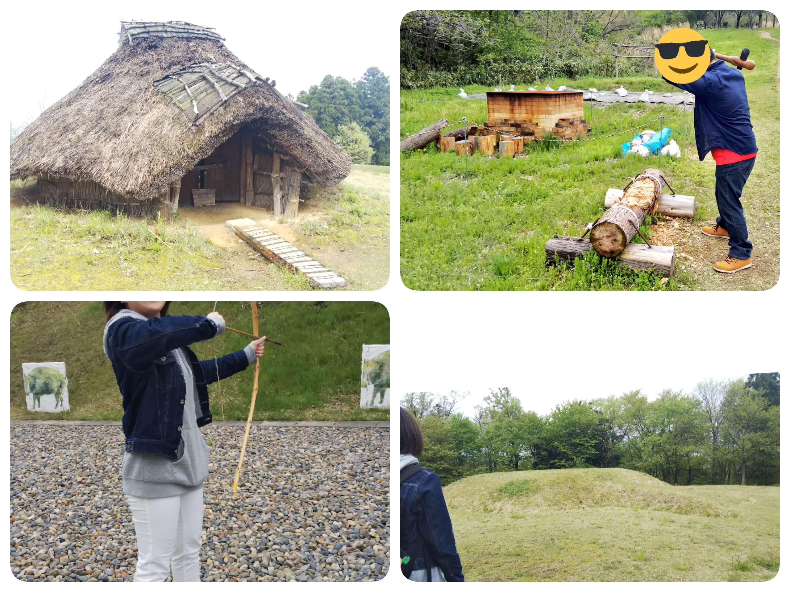

活動報告
浜コン2019 8/7
今年も浜コンを開催しました！
例年同様部会で部員が作成した土器を浜の流木を集めて焼き、ついでにBBQをしました。
天気は幸か不幸か快晴、全員汗だくの状態で準備完了
土器は縄文時代当時の焼き方を参考に、浜に穴をほって中心に火を焚き、周りに置いて焼きます。画像左下が土器を焼きつつマシュマロを炙る様子です。
BBQも終わり、あたりが暗くなってきてからみんなで花火もしました！！
暑さで全員死にかけてましたがとても楽しかったです！

6月巡検 6/23（日）
本日は新入生歓迎会もかねて旭町学術資料館と新潟市歴史博物館みなとぴあに行ってきました～
今回は20人近くの参加者がいたので安心しました…
まさかの部長の遅刻というハプニングが起きましたが、部長はおいて定刻活動開始です！
まずは旭町資料館へお邪魔しました。新歓でここを訪れるのは毎年恒例です！
午後はみなとぴあまでみんなでお散歩しました。
部員一同新潟の歴史に触れるとても良い機会となりました！

4/30 巡検
巡検を開催しました。今回は古津八幡山遺跡と弥生の丘展示館にお邪魔しました～
GWの最中ということもあり参加人数は部員数46人に対し少数精鋭7人！(ものは言いようです)
雨の予報でしたが、なんとか天気も持ちこたえ、野外活動も楽しく行えました。
古津八幡山遺跡は弥生時代の高地性環濠集落で、新潟県内では最大の円墳があった遺跡です。日頃の運動不足を後悔しながら復元整備された円墳を登ると、意外と遠くまで見渡すことができます。
展示館では職員の方の指導のもと、石斧の体験と弓矢の体験をさせていただきました。意外と当たります。勉強になるお話も沢山聞かせていただきました！ありがとうございました～
余談ですが、古津八幡山遺跡を再現したジオラマを新大祭で展示する予定ですので、お時間があるかたはぜひ観に来ていただけると部員一同喜びます。よろしくお願いします。
黎明祭2019
今年も黎明祭が行われました！
なんと用意したお菓子とジュースが無くなるほど多くの新入生に見学に来ていただきました。本当にありがとうございます！！
今回の部活動紹介で少しでも興味を持っていただければ幸いです。入部お待ちしております～
ご質問などありましたらTwitterやメール(hannykouko@gmail.com)からどうぞ！